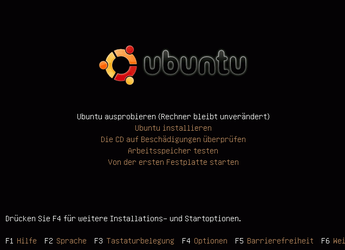
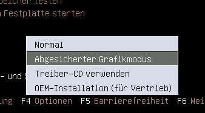
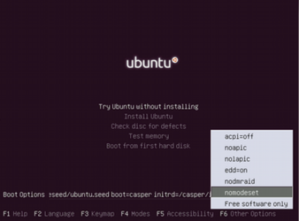
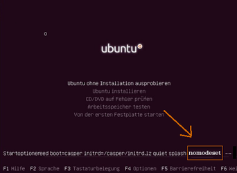
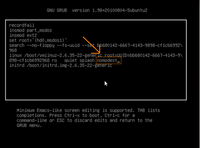
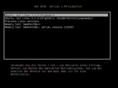

Ubuntu-CD Problembehebung
Zum Verständnis dieses Artikels sind folgende Seiten hilfreich:
Datenträger - Wie heißen die Datenträger/Partitionen?
Normalerweise funktioniert der Start von einer Ubuntu-CD ohne Probleme. Insbesondere bei der Desktop-CD/Live-USB in Verbindung mit manchen ATI-Grafikkarten und einigen Notebooks kann es aber Probleme geben. Dann ist kurz nach dem Bootmenü Schluss, d.h. entweder bleibt der Splashscreen stehen, oder der Bildschirm bleibt schwarz. Für dieses und andere Probleme soll dieser Artikel Lösungen bieten.
Anmerkung: Bis Ubuntu 12.04 LTS wurde auch noch eine Alternate-CD angeboten, die bei einigen Bootproblemen, z.B. Software-RAID/Systemverschlüsselung, besonders geeignet war. Diese Funktionen wurden mittlerweile auf den neuen Live-Medien voll integriert.
Neustart erzwingen¶
Wenn das System hängt, kann man meist mit Alt + Druck + B den PC neu starten, siehe dazu auch Notfall. Sollte dies nicht funktionieren, dann gibt es auch unter Linux einen "Klammergriff", die sog. Magic-Keys. Bevor man einen PC auf die "harte Tour" mit dem Power-Off-Knopf ausschaltet, sollte man auch noch diese ausprobieren, um ein ordnungsgemäßes Herunterfahren zu gewährleisten.
Checksumme überprüfen¶
Außerdem gibt es auf den Downloadservern  zur jeweiligen Ubuntu-Version noch eine Datei MD5SUMS, in der die MD5-Prüfsumme steht. Alternativ kann man diese Liste verwenden.
zur jeweiligen Ubuntu-Version noch eine Datei MD5SUMS, in der die MD5-Prüfsumme steht. Alternativ kann man diese Liste verwenden.
Anhand eines Vergleichs der Prüfsumme der heruntergeladenen Datei (also dem ISO-Abbild) und der „Soll-Prüfsumme“ kann geprüft werden, dass die Datei in Ordnung ist, also das man kein defektes Image geladen hat. Brennprogramme wie K3b machen das selbstständig, ansonsten kann man md5sum nehmen. Außerdem kann sich die CD, sobald sie geladen ist, auch selbst überprüfen.
Hardwareprobleme¶
Gerade vor einer Neuinstallation empfiehlt es sich, Hardwareschäden, insbesondere an RAM und Festplatte[3], auszuschließen. Den RAM kann man mit der Option "Memory Test" überprüfen und mind. 40 Min. lang laufen lassen (je länger, desto besser), damit man aussagefähige Werte erhält. Wie man die Datenträger/Partitionen auf Probleme untersucht wird im Artikel Festplatten Problembehebung beschrieben.
|  |
| Ubuntu 8.04 Bootscreen |
|  |
| Ubuntu 8.04 |
|  |
| Ubuntu 12.04 |
|  |
| Ubuntu 12.04 Bootoptionen |
Booten und Installieren von einem Live-Medium¶
Als erstes sollte man mit F2 die Sprache auf "Deutsch" einstellen. Die Tastaturbelegung wird dabei ebenfalls automatisch auf Deutsch umgestellt, kann aber mit F3 auch auf eine anderes Tastaturlayout eingestellt werden. Um weitere Hilfe zu erhalten kann man mit F1 die Hilfefunktion aufrufen.
Sicherer Grafikmodus¶
Sollte der Desktops falsch dargestellt werden, so kann man die Installation im "Abgesicherten Grafikmodus" starten, den man über F4 erreicht. Mit dieser Einstellung wird versucht die Grafikkarte und den Monitor mit den geringstmöglichen Anforderungen anzusprechen. Nach erfolgter Installation kann man dann im "richtigen" System nachträglich Treiber installieren oder Einstellungen vornehmen, so dass die Grafikausgabe korrekt erfolgt.
Bootoptionen¶
Um Bootparameter mitgeben zu können drückt man im Bootbildschirm F6 . Im sich öffnenden Unterfenster kann man nun unter vorgegebenen Bootoptionen wählen. Dazu steuert man die einzelne Option mit ↑ + ↓ an und aktiviert/deaktiviert sie mit oder ⏎ . Dieses Untermenü verlässt man wieder mit Esc , dabei bleibt die komplette Kernelzeile am Bildschirm erhalten und kann weiter bearbeitet werden. Dazu navigiert man wieder mit ← + → und löscht bzw. ergänzt die Optionsliste am Ende der Zeile. Sollte die Zeile zwei -- enthalten, trägt man die gewünschte(n) weitere(n) Option(en) vor oder nach diesen zwei Bindestrichen ein. Alle Angaben, auch die Bindestriche, müssen durch ein Leerzeichen (␣) voneinander getrennt werden.
Sollte der Ladevorgang mit einem lila Bildschirm stehen bleiben, dann kann man mit F1 oder Esc die verborgenen Fehlermeldungen anzeigen lassen.
Bei Problemen empfiehlt es sich, die Parameter splash und quiet zu löschen bzw. seit Einführung von Plymouth (siehe auch Kernel-Mode-Settings) beide Optionen mit noplymouth überschreiben. Dadurch wird die grafische Anzeige ausgeblendet und man kann den Bootvorgang verfolgen und eventuelle Fehlermeldungen besser erkennen.
AHCI-Modus deaktivieren¶
Falls das Motherboard (d.h. die Hauptplatine des Rechners) die Laufwerke im AHCI-Modus betreibt, kann es vorkommen, dass von der CD/DVD nicht gebootet werden kann. Um dann ACPI auszuschalten, kann man die Bootoption acpi=off benutzen. Sollte diese Option keine Wirkung zeigen, so kann man noch im BIOS-Setup prüfen, ob man dort temporär auf IDE umstellen kann - nach der Installation kann wieder in den AHCI-Modus zurückgeschaltet werden. Das Zurückschalten ist wichtig, falls bereits zuvor ein Windows mit AHCI-Treibern installiert wurde, da es ansonsten nicht mehr bootet.
Kernel-Mode-Settings ausschalten¶
Mit der Option nomodeset können die Kernel-Mode-Settings versuchsweise abgeschaltet werden. Dies wird z.B. erforderlich, wenn der Bootvorgang mit einem lila Bildschirm stehen bleibt. Hintergrund: Seit der Einführung von Plymouth (Kernel 2.6.28) wurde der Video-Modus der Grafikkarten vom XServer in den Kernel verlagert. Dadurch wurde es möglich, dass ein hochauflösender "Boot Splash" (Plymouth) angezeigt werden kann.
Um Fehlermeldungen anzuzeigen, siehe den Abschnitt Bootparameter.
Sicherer Grafikmodus¶
Durch den Eintrag von xforcevesa wird der sicheren Grafikmodus ausgewählt. Hat man diesen über F4 ausgewählt, dann ist diese Option bereits bei den Bootoptionen eingetragen.
Keinen Datenträger gefunden¶
Sollte die Installationsroutine keine Datenträger/Partitionen[3] finden, dann hilft die Bootoption nodmraid weiter. Alternativ kann man auch in ein Terminal wechseln und dort das Programm zu RAID mit einem:
sudo apt-get purge dmraid
deinstallieren. Danach sollten die Datenträger gefunden werden.
|  |
| Grub 1.99 Editiermodus E |
|  |
| GRUB 1.99 Auswahlmenue |
GRUB-Menue¶
Bekommt man ein GRUB 2-Auswahlmenü angeboten, dann hat man die das Live-Medium im EFI-Modus gestartet. Auch hier kann man die Kernelzeile um die oben genannten oder weitere Bootoptionen ergänzen. Dazu muss man aber den Editiermodus über die GRUB 2/Shell aufrufen und geht wie folgt vor:
Anwählen des zu bearbeitenden Eintrags mit ↑ + ↓
Öffnen des Bearbeitungs-Modus durch drücken von E
Ansteuern der Kernel-Zeile (
linux/kernel) mit den Pfeiltasten um die Optionen am Ende der Zeile abzuändern bzw. zu ergänzen. Die einzelnen Angaben müssen durch ein Leerzeichen (␣) voneinander getrennt werden.Der so geänderte Kernel kann nun direkt mit Strg + X gestartet werden, dazu darf man den Bearbeitungs-Modus nicht verlassen.
Kommandozeile¶
Die grafische Oberfläche wird bei Ubuntu immer auf der 7. virtuellen Konsole gestartet. Sollte das System sich scheinbar aufgehangen haben, dann kann man auf eine andere virtuelle Textkonsole wechseln, um dort manuell[1] Eingaben zu tätigen. Dazu drückt man Strg + Alt + F1 bis Strg + Alt + F6 um auf eine der weiteren 6 Konsolen zu gelangen.
Dort kann man z.B. die /etc/X11/xorg.conf mit einem Kommandozeileneditor [2] bearbeiten und den Grafiktreiber (Driver) im Abschnitt Section "Device" von "ati" oder "nv" auf "vesa" ändern und probieren, ob die grafische Oberfläche sich danach mit
startx
starten lässt.
Wenn das nicht hilft, kann man sich die /var/log/Xorg.0.log mit
more /var/log/Xorg.0.log
anzeigen lassen, um den Fehler zu finden. Die Datei kann man ggf. auch auf eine andere Festplatte/USB-Stick kopieren, falls dies möglich ist, oder die Fehlermeldungen notieren und sie im Forum posten bzw. in den No Paste Service einstellen.
Kommandozeile nicht möglich¶
Bei manchen ATI-Grafikkarten, evtl. nur in Kombination mit AMD-Prozessoren, ist es nicht möglich, an dieser Stelle auf eine Textkonsole zu gelangen (Fehlerbericht 67487 10/2006 Status: fix released). Dann gibt es zwei Möglichkeiten:
AGP-Geschwindigkeit reduzieren¶
Bei AGP-Karten im BIOS die AGP-Geschwindigkeit von 8x auf 4x reduzieren. Danach sollte sich die Desktop-CD ohne besondere Einstellungen oder Parameter starten lassen. Wenn man die AGP-Geschwindigkeit nicht reduzieren möchte, sollte man nach der Anleitung im nächsten Abschnitt vorgehen.
xorg.conf editieren mit (initramfs)¶
Falls das nicht hilft, man die AGP-Geschwindigkeit nicht reduzieren möchte oder man eine PCIe-Karte verwendet, geht man nach folgender Anleitung vor. Da hierbei die Tastaturbelegung "Englisch" ist, auch wenn man vorher "Deutsch" ausgewählt hat, vorerst einige Tastenerklärungen:
| Zeichen | Deutsche Kombination | Englische Kombination |
| / (Slash) | ⇧ + 7 | - |
| # (Raute) | # | ⇧ + 3 |
Als Bootparameter(siehe oben) break=bottom hinzufügen (splash und quiet wieder entfernen).
Warten, bis eine Eingabeaufforderung [1] mit (initramfs) erscheint.
Den Befehl
chroot /root
eingeben.
Nun kann man die Datei /etc/X11/xorg.conf mit einem Texteditor für die Konsole [2] öffnen. Es gibt hier verschiedene Möglichkeiten:
Zum Abschnitt Section "Device" für die Grafikkarte
Option "AGPMode" "8"
hinzufügen oder
im Abschnitt Section "Modules" die Zeile dri auskommentieren:
# Load "dri"
oder
den Treiber von "ati" auf "vesa" ändern (siehe oben).
Speichern und den Editor beenden.
Mit
exit
beendet man die chroot-Umgebung.
Ein zweites
exit
setzt den Bootvorgang fort, und es sollte eine grafische Oberfläche starten.
Von Alternate-CD installieren¶
Falls alles nicht hilft oder es zu viel Aufwand ist, kann man bis Ubuntu 12.04 LTS stattdessen von der Alternate-CD installieren. Das ist fast genau so leicht und auch empfehlenswert, weil sie mehr Einstellungsmöglichkeiten bietet. Es kann zwar vorkommen, dass Ubuntu dann nach dem ersten Booten auch mit einem schwarzen Bildschirm stehen bleibt, aber dann kann man einfach im Recovery Modus oder von einer Knoppix-Live-CD  booten und die xorg.conf ändern oder leicht an die Logs gelangen und sie posten (siehe oben).
booten und die xorg.conf ändern oder leicht an die Logs gelangen und sie posten (siehe oben).
Falls sich auch die Installation von der Alternate-CD aufhängt, was sehr selten ist, findet man im Artikel Booten Parameter für den Debian-Installer. Insbesondere debian-installer/framebuffer=false sollte man in diesem Fall ausprobieren.
Probleme bei Dualboot-Installation¶
Windows startet nach einer abgebrochenen Installation nicht¶
Sollte aus verschiedenen Gründen die Installation nicht ganz durchgelaufen sein, kann es passieren, dass sich auch Windows: nicht mehr starten lässt. Das kann daran liegen, dass die Installationsroutine bei der Linux-Partition das Bootflag gesetzt hat, welches nun der Windows-Partition fehlt. Zur Reparatur sollte GParted von einem Live-Medium gestartet werden. Damit lässt sich das Bootflag der Windowspartition wieder korrekt setzen. Alternativ kann man hierfür das Kommandozeilenwerkzeug fdisk benutzen.
Links¶
Installation
 Übersichtsseite
ÜbersichtsseiteBooten - Eine Aufstellung von speziellen Bootoptionen
Plymouth - der grafische "Boot Splash"
GRUB 2 - der Bootloader unter Ubuntu
GRUB 2/Shell - Editor
- Erstellt mit Inyoka
-
 2004 – 2017 ubuntuusers.de • Einige Rechte vorbehalten
2004 – 2017 ubuntuusers.de • Einige Rechte vorbehalten
Lizenz • Kontakt • Datenschutz • Impressum • Serverstatus -
Serverhousing gespendet von